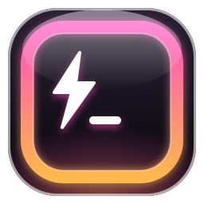

genisys ready
genisys ready| Ctrl Alt G | Show Genisys |
| Ctrl Alt N | New agent window |
| Ctrl Alt S | New Script Writer window |
| Enter | Send task |
| Esc | Stop the running task |
| Ctrl L | Clear the screen |
| F1 · Ctrl / · ? | This help (on laptops F1 may need Fn) |
| Ctrl , | Settings · keys · memory · about you · notes |
| click the name | Rename this agent (or double-click a chip) |
| ◐ (top right) | Light / dark theme |
| /agent <task> | Open a new agent that starts on the task |
| /script <task> | Open the Script Writer on the task |
open my Downloads folder
find the folder named excute and open it in VS Code
show my IP address and free disk space
python script that sorts Downloads into folders by file type
batch file that backs up Documents to D:\backup
Risky commands and overwriting files ask first with Run / Skip. Unclear or harmful requests get a question instead of an action.
Scripts are saved in %USERPROFILE%\scripts unless you give a path.